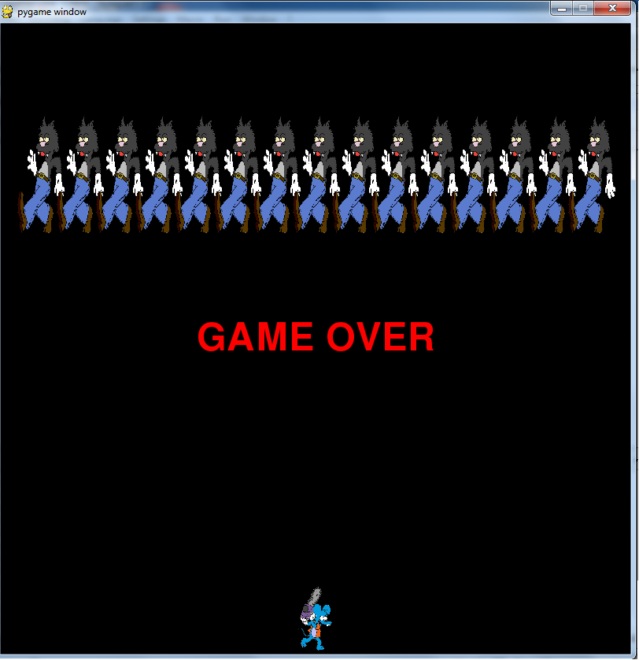
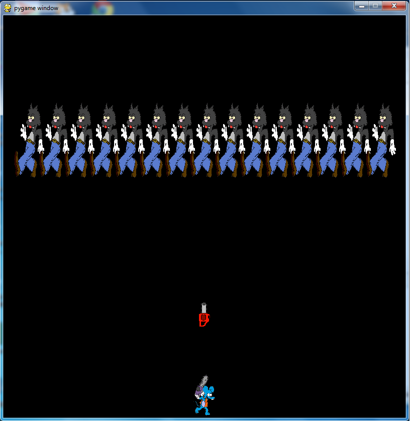

An Itchy & Scracthy/Space Invaders inspired game.


self.image = pygame.image.load("H:\Itchy.png")
self.image = pygame.transform.scale(self.image, (50,100))
These lines are what we used to load the image into the game as well as scale the photo's size.
Reflections: The project was alittle rocky and could have been improved on. The collisions between the saws and cats could have been refined at bit more along with the addition of a score counter or time counter. Most of the things I'd have like to have changed would be purely cosmetic.